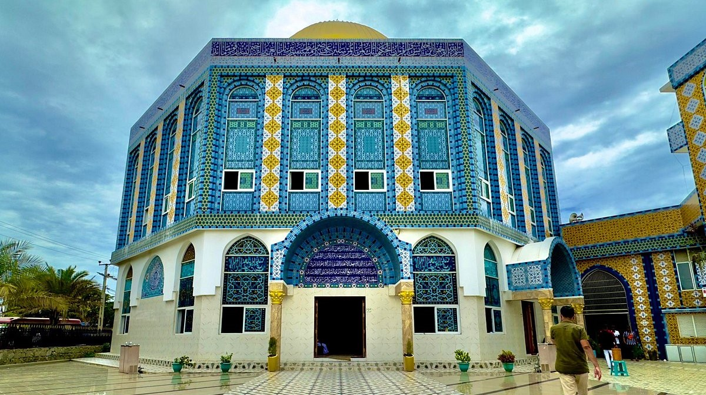
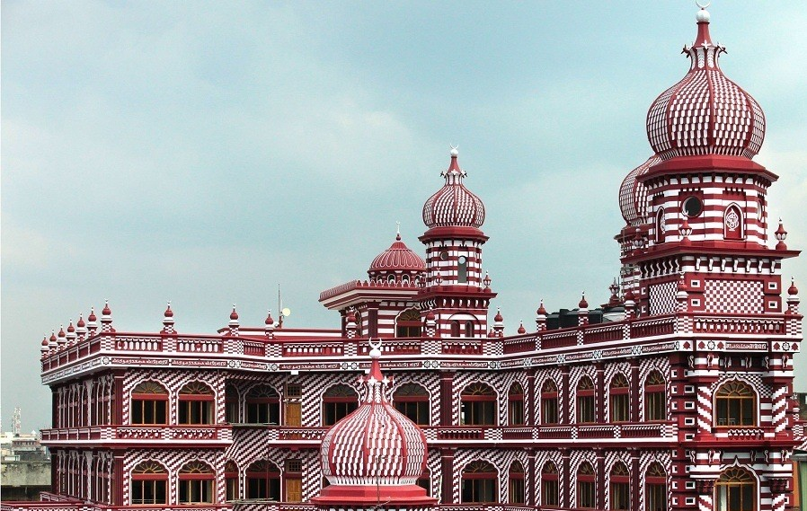

Grand Mosque of Kattankudy – Batticaloa

One of the largest mosques in Sri Lanka
Modern Islamic architecture
Center of Muslim religious life in the East
Jami Ul-Alfar Mosque (Red Mosque) – Colombo

Iconic red-and-white striped architecture
Popular tourist attraction in Pettah
One of the most photographed mosques in Sri Lanka